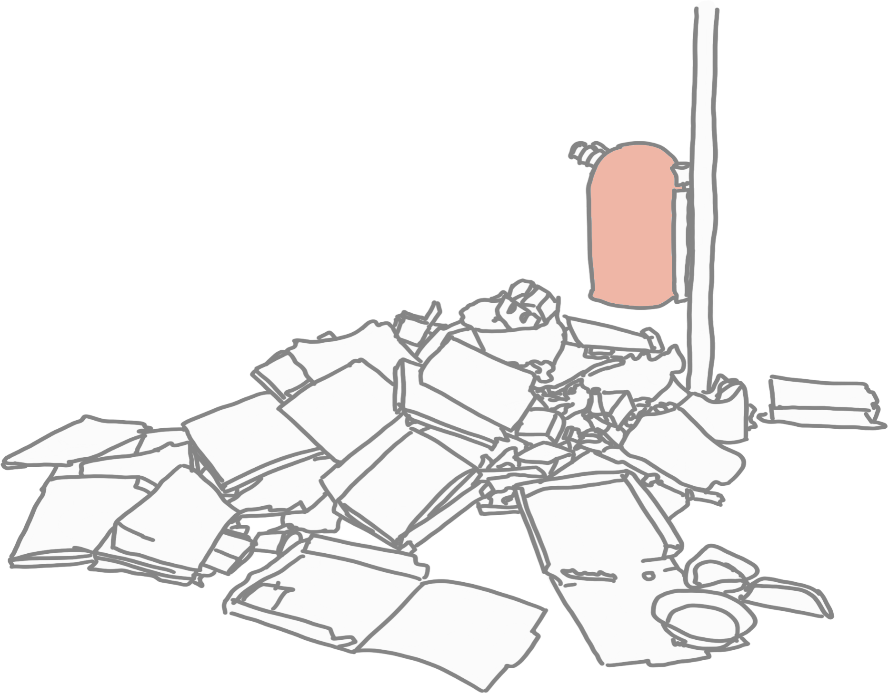
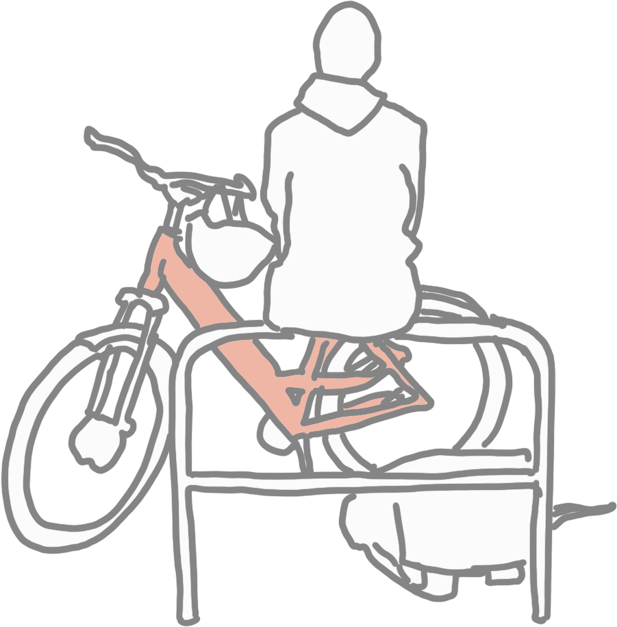
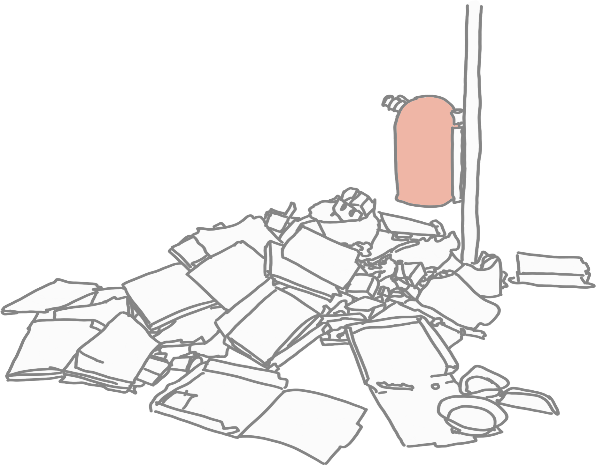
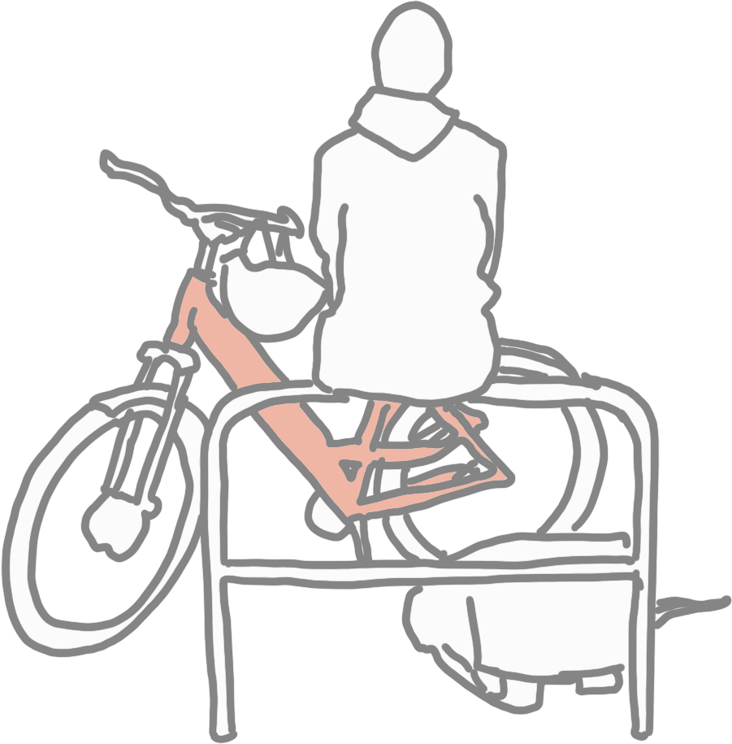
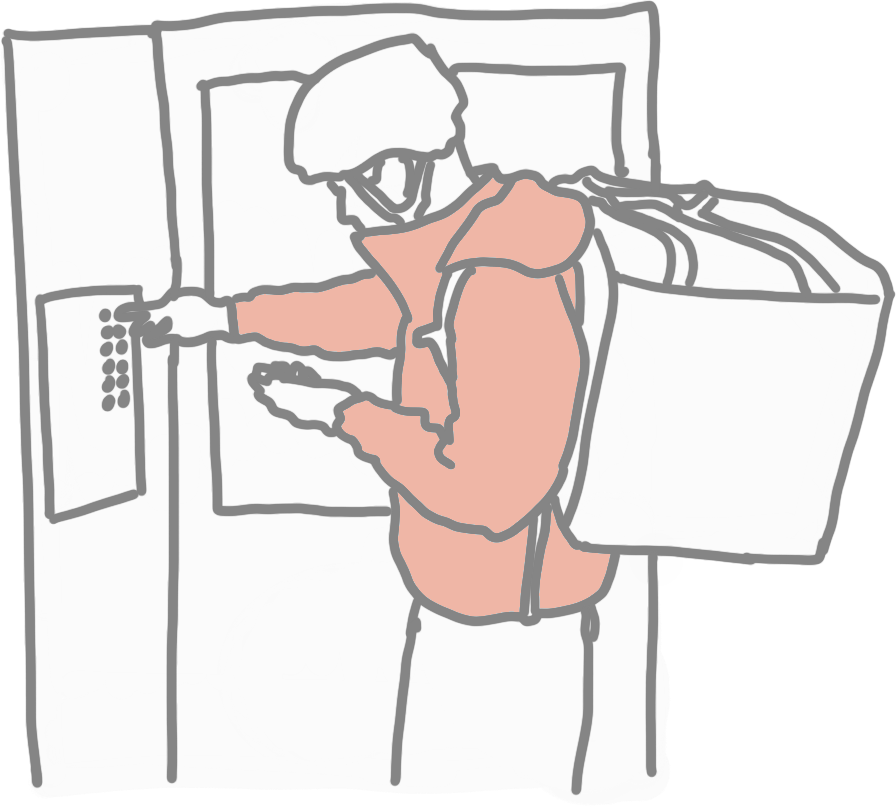
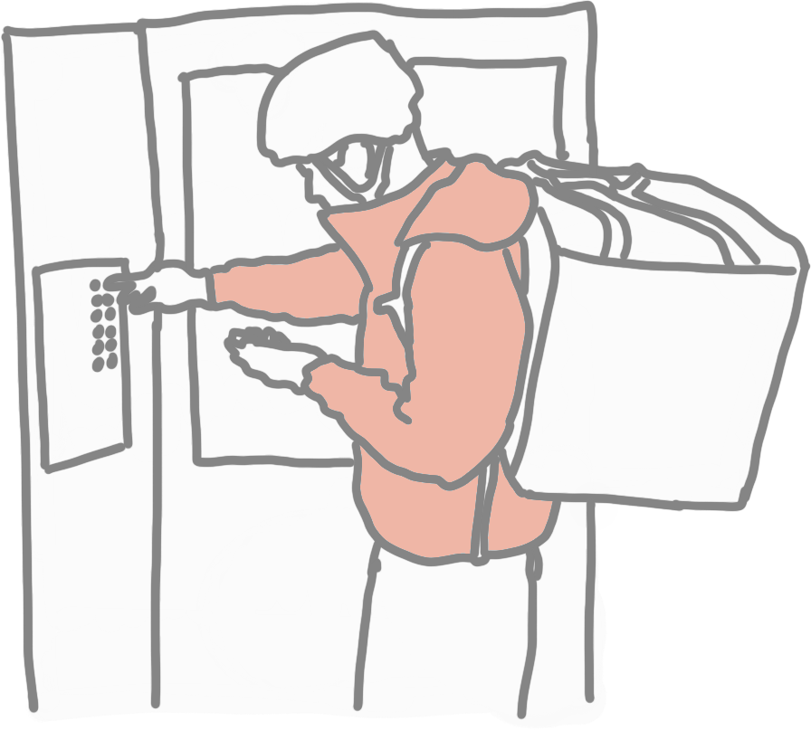
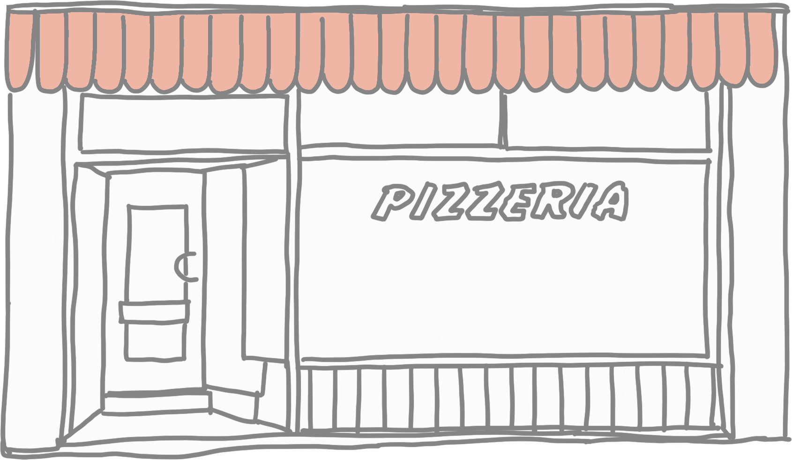
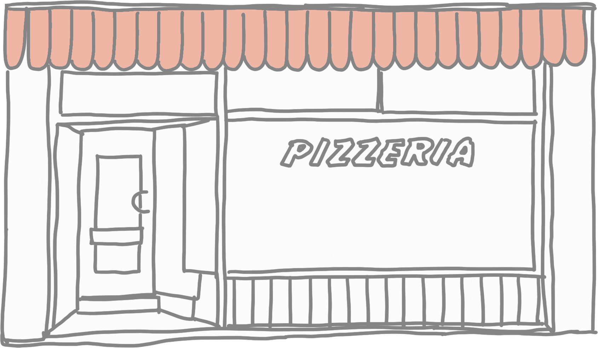

Preparing Food
Preparing Food
Preparing Food
picking-up-food
food-consumption
customer-interacttion
the journey of a bicycle courier
There has been a rapid acceleration of food delivery services since the start of the COVID-19 pandemic. Such services are influencing both the spatial the human landscape and leaving traces of their impact. This page will take you on a delivery journey and highlight some of the traces along the way. Read more
Placing Order
Obeservations at Boxhagener
Platz in Berlin
safety
food-waste
reflections

 





 

 
